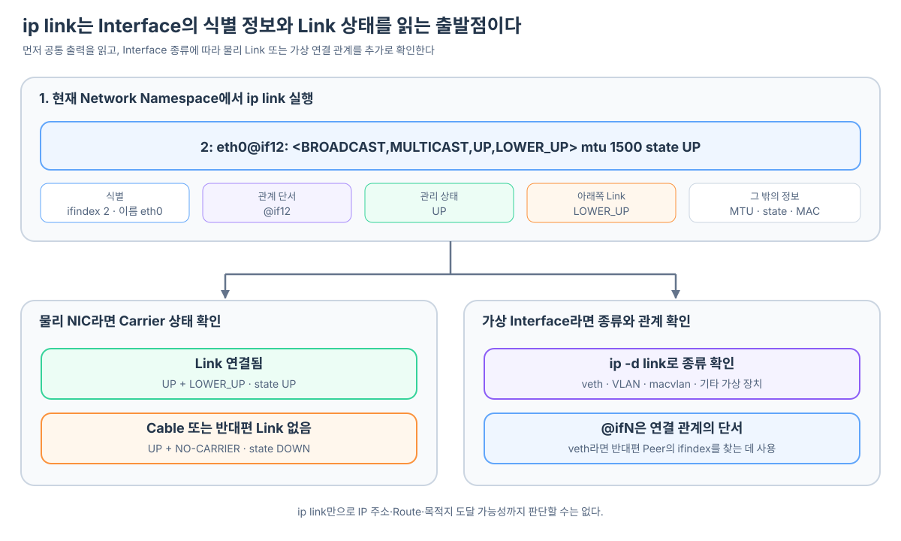

Linux에서 Packet을 내보내려면 Route가 선택한 Network Interface가 실제로 존재하고 사용할 수 있는 상태여야 한다. Pod의 eth0, Node의 물리 NIC와 Host 쪽 veth는 모두 Linux Kernel에 Network Interface로 등록된다. 다만 eth0은 이름이고 veth는 장치 종류이므로, 일반적인 Pod의 eth0 자체도 veth pair의 한쪽 끝점일 수 있다.
ip link는 이런 Interface의 목록과 Link 계층 상태를 확인하는 기본 명령이다.
ip link
ip link show eth0
이 명령을 통해 현재 Network Namespace에서 보이는 Interface의 이름과 번호, 관리 상태, 아래쪽 Link 상태, MAC 주소와 다른 Interface와의 연결 단서를 확인할 수 있다.

ip link는 현재 Network Namespace의 Interface를 보여 준다
ip link가 보여 주는 목록은 명령을 실행한 Network Namespace를 기준으로 한다.
Pod 안에서 실행하면 Pod가 볼 수 있는 lo, eth0 등이 나타난다. Kubernetes Node에서 실행하면 물리 NIC, Bridge, Host 쪽 veth 등 Node가 볼 수 있는 Interface가 나타난다.
Pod Network Namespace에서 ip link
→ lo
→ eth0
Host Network Namespace에서 ip link
→ lo
→ 물리 NIC
→ Bridge
→ 각 Pod와 연결된 Host veth
같은 Linux Kernel을 공유하더라도 Network Namespace가 다르면 보이는 Interface 목록도 다르다. 원하는 장치가 출력에 없다면 장치가 존재하지 않는다고 바로 결론내리기보다 어느 Namespace에서 명령을 실행했는지 먼저 확인해야 한다.
출력은 Interface 식별 정보와 상태를 나누어 읽는다
다음은 단순화한 출력 예시다.
2: eth0@if12: <BROADCAST,MULTICAST,UP,LOWER_UP> mtu 1500 state UP
link/ether 2a:11:22:33:44:55
각 부분은 서로 다른 정보를 담고 있다.
| 출력 | 의미 |
|---|---|
2 |
현재 Interface의 Kernel 번호인 ifindex |
eth0 |
현재 Network Namespace에서 사용하는 Interface 이름 |
@if12 |
다른 Interface와의 연결 또는 의존 관계를 찾는 단서 |
UP |
관리 설정상 Interface가 활성화됨 |
LOWER_UP |
Driver가 아래쪽 Link가 동작 중이라고 보고함 |
mtu 1500 |
한 번에 전송할 수 있는 Packet 크기 기준 |
state UP |
Interface의 동작 상태 |
link/ether |
Ethernet Link 계층에서 사용하는 MAC 주소 |
앞쪽의 2는 eth0 자신의 번호다. Linux Kernel은 Interface마다 ifindex라는 정수 번호를 부여한다.
2: eth0
│ └─ Interface 이름
└─ 자신의 ifindex
현재 Interface 번호는 다음으로도 확인할 수 있다.
cat /sys/class/net/eth0/ifindex
UP과 LOWER_UP은 서로 다른 상태다
UP은 관리자가 Interface를 사용하도록 설정했는지를 나타낸다. LOWER_UP은 Driver가 그 아래쪽 Link가 실제로 동작한다고 판단했는지를 나타낸다.
UP
→ Interface를 관리 설정상 켜 둠
LOWER_UP
→ 아래쪽 물리 또는 가상 Link가 동작 중
둘은 동시에 보일 수도 있고, UP만 보일 수도 있다. 물리 NIC를 켜 놓았지만 Cable이 빠져 있다면 관리 상태는 UP이면서 실제 Link는 내려가 있을 수 있다.
| 표시 | 일반적인 의미 |
|---|---|
UP, LOWER_UP, state UP |
활성화되어 있고 아래쪽 Link도 동작함 |
UP, NO-CARRIER, state DOWN |
Interface는 켰지만 물리 Link 신호가 없음 |
UP 없음, state DOWN |
관리 설정상 Interface를 내린 상태 |
state UNKNOWN |
Kernel이 일반적인 방식으로 동작 상태를 확정하지 못함 |
가상 Interface에서는 state UNKNOWN이면서 정상 통신하는 경우가 있다. 물리 NIC의 Carrier 해석을 모든 가상 Interface에 그대로 적용하면 안 된다.
또한 LOWER_UP은 Interface 바로 아래 Link의 상태다. 이 표시만으로 Gateway, DNS Server나 외부 서비스까지 실제로 통신할 수 있다고 증명되지는 않는다.
물리 NIC는 Carrier 상태로 Cable 연결을 판단한다
물리 NIC의 반대편에는 일반적으로 다른 Linux Interface가 아니라 Cable과 Switch가 있다. 그래서 Peer Interface 번호 없이 다음과 같이 보일 수 있다.
3: enp0s1: <BROADCAST,MULTICAST,UP,LOWER_UP> ... state UP
Cable이 빠졌거나 반대편 Switch Port의 Link가 내려가 있다면 다음처럼 보일 수 있다.
3: enp0s1: <NO-CARRIER,BROADCAST,MULTICAST,UP> ... state DOWN
물리 NIC에서는 @if숫자보다 LOWER_UP, NO-CARRIER와 state를 중심으로 Link 상태를 읽는다.
Route가 이 NIC를 출력 Interface로 선택하더라도 Link가 내려가 있다면 Frame을 실제 Network로 전달할 수 없다. Route가 있다는 것과 Interface가 실제 송신 가능한 상태라는 것은 별개의 조건이다.
가상 Interface에서는 다른 Interface와의 관계가 보일 수 있다
가상 Interface는 다른 Linux Interface 위에 만들어지거나 다른 Interface와 한 쌍으로 연결될 수 있다. 이때 이름 뒤의 @if숫자가 관계를 찾는 단서로 나타날 수 있다.
2: eth0@if12: <BROADCAST,MULTICAST,UP,LOWER_UP> ...
일반적인 veth 기반 Pod라면 다음처럼 읽을 수 있다.
2 Pod eth0 자신의 ifindex
eth0 Pod 안에서 보이는 이름
@if12 반대편 Peer의 ifindex가 12라는 단서
Node 쪽에서 대응하는 Interface를 찾으면 다음과 같은 관계가 될 수 있다.
Pod Network Namespace
2: eth0@if12
Host Network Namespace
12: veth8ac3@if2
Pod 안에서는 Host Network Namespace의 Interface 이름을 직접 볼 수 없다. if12는 반대편을 찾을 단서이고, 실제 이름은 Node 쪽 Interface 목록에서 확인해야 한다.
at if 표시는 veth를 확정하는 증거가 아니다
@if12는 다른 Interface와의 연결 또는 의존 관계를 나타내는 표기다. veth pair에서 흔히 보이지만 VLAN이나 macvlan 같은 다른 가상 Interface에서도 나타날 수 있다.
따라서 다음 순서로 확인한다.
ip link
→ Interface 존재 여부와 현재 상태 확인
→ @if숫자가 있다면 관계를 찾는 단서로 사용
ip -d link
→ Interface의 상세 종류와 구성 확인
ip -d link show eth0
환경에서 지원한다면 Driver 정보도 참고할 수 있다.
ethtool -i eth0
veth라면 상세 정보나 Driver 이름에서 veth를 확인할 수 있다. CNI가 macvlan, ipvlan 또는 SR-IOV 같은 다른 방식을 사용한다면 연결 구조와 확인 방법도 달라진다.
반대로 @if숫자가 없다고 연결되지 않았다는 뜻도 아니다. 물리 NIC처럼 반대편이 Linux Interface가 아닌 장치도 있고, Peer 표기를 사용하지 않는 Network 구조도 있다.
ip link만으로 IP 통신 전체를 판단할 수는 없다
ip link는 Interface와 Link 계층을 확인하는 출발점이다. IP 주소, Route와 실제 목적지 도달 가능성까지 모두 보여 주는 명령은 아니다.
| 확인하려는 것 | 사용할 정보 또는 명령 |
|---|---|
| Interface가 존재하고 활성화됐는가? | ip link |
| Interface 종류와 연결 구조는 무엇인가? | ip -d link |
| 어떤 IP 주소가 설정됐는가? | ip addr |
| 목적지에 어느 Interface를 사용하는가? | ip route, ip route get |
| Neighbor의 MAC 주소를 알고 있는가? | ip neigh |
| 실제 목적지까지 통신 가능한가? | 목적에 맞는 연결 요청과 Packet 관찰 |
예를 들어 eth0에 UP과 LOWER_UP이 보여도 IP 주소가 없거나 Route가 잘못됐다면 원하는 목적지와 통신할 수 없다. 반대로 Route가 올바르더라도 물리 NIC에 NO-CARRIER가 표시되면 Packet을 Link 밖으로 내보낼 수 없다.
Kubernetes에서는 명령을 실행하는 위치도 함께 확인한다
일반적인 veth 기반 Pod에서 eth0은 Pod 쪽 veth 끝점의 이름이다. 이 끝점과 Peer 관계인 Host 쪽 veth를 대응시키려면 Pod와 Node 양쪽의 Network Namespace를 봐야 한다.
Pod 안의 ip link
→ Pod 쪽 veth 끝점 eth0의 이름·ifindex·상태 확인
Node의 ip link
→ Host 쪽 veth 끝점의 이름·ifindex·상태 확인
Minikube나 컨테이너 기반 Kubernetes에서 Node는 macOS Host가 아니라 VM 또는 Node Container일 수 있다. macOS Terminal에서 실행한 ifconfig와 Kubernetes Node 안에서 실행한 ip link가 서로 다른 Interface 목록을 보여 주는 이유다.
이 글에서 @if숫자는 전체 주제가 아니라 가상 Interface의 연결 구조를 추적할 때 사용하는 한 가지 단서다. 먼저 ip link로 Interface가 존재하는지와 상태를 읽고, 그다음 Interface 종류에 따라 물리 Carrier 또는 가상 Interface 관계를 추가로 확인하면 된다.